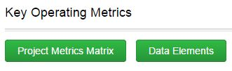
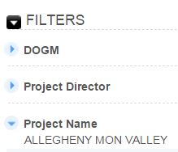
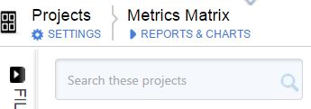

Project Metrics Matrix
To view existing Metric records, select the "Project Metrics Matrix" button from the Key Operating Metrics section of the Home Page.

This will take you to a report where you may:
1) Filter by DOGM, Project Director, or Project Name

2) Search/filter for a specific project's metric records

Created with the Personal Edition of HelpNDoc: Easily create iPhone documentation